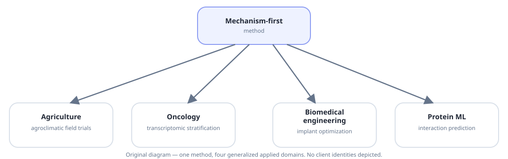

Same reasoning, different domains.
The earlier chapters explain why this way of working exists. This page shows where else it's been put to use: start with the mechanism, represent it as structured data, and don't interpret until the evidence is solid — applied to client work in agriculture, cancer research and biomedical engineering.
This is a selection, not a full CV. Client identities are generalized where the source material does not authorize public naming. Full academic record: Google Scholar · ORCID.

The AidBio software layer
AidWeather, AidViz, AidGSEA and AidFarm are covered in depth in Chapter 05 — Software. This page focuses on applied engagements built on top of that layer, and on client-facing work outside the AidBio open-source projects.
The same evidence-first method, transferred to new problems.
Agroclimatic field-trial analytics for coffee reproductive development
For a multinational food and beverage client, weather variables (temperature, rainfall, sunlight, humidity) were combined with field-trial data to study coffee flowering and fruit development. A related project modeled how many coffee flowers actually turn into harvestable pods across multiple sites — using a statistical model built for count data like this, plus machine-learning models to sharpen the predictions — to help guide pruning, variety selection and harvest timing decisions at each site.
Transcriptomic patient stratification in precision oncology
Gene-activity sequencing (RNA-seq) was used to study how melanoma (skin cancer) tumors respond to treatment. Comparing which genes were more or less active between patients, and which biological pathways those genes belonged to, helped separate patients whose tumors responded to a drug from those whose didn't — candidate biological signals that could eventually help predict response before treatment starts.
Structure–property optimization of 3D-printed implants
3D-printed titanium lattice structures — the kind used in medical implants — were mechanically tested for stiffness, strength and how much load they can take before failing. Machine-learning models then learned how the lattice's internal geometry drives those mechanical properties, to help design implants that are strong enough to bear load while staying compatible with the body.
gPPIpred and Aid2GO — graph ML for protein interactions and function
Covered in full in Chapter 04 — Models: a published AI model that predicts whether two proteins interact (gPPIpred), and a complementary system that predicts what a protein does (Aid2GO) — both built so the biological network structure is part of the model itself, not just an input to it.
Different domain, same discipline: identify the mechanism, represent it as structured data, model it without discarding that structure, and keep the evidence traceable enough to challenge.